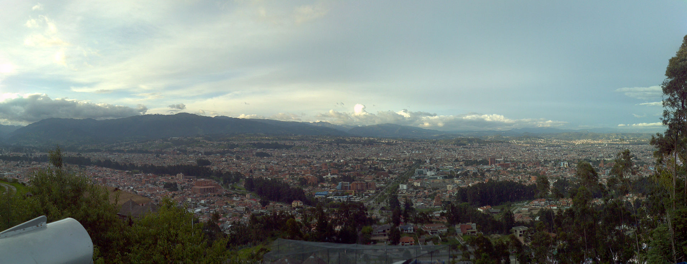

Datos Geograficos sobre Cuenca

Limites
Cuenca se encuentra ubicada en la región Sierra Austral; hablando en términos
relativos limita al Este con Morona Santiago y Zamora Chinchipe, y al Oeste
limita con la provincia del Guayas y El Oro.
Extension
Su superficie es de aproximadamente 157.3 km2, su altitud media es de
alrededor de los 2550 msnm.
Población
Cuenta con aproximadamente 500000 habitantes , dividos en 15 parroquias urbanas;
su gentilicio es Cuencano/a.